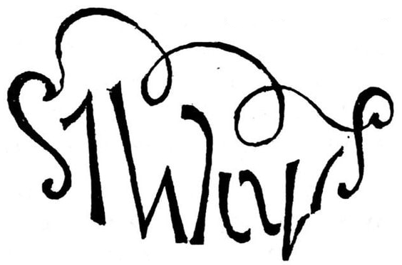
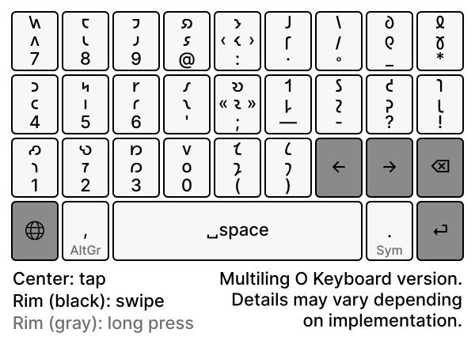
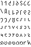
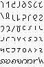

The Shavian phonemic alphabet.
The Shavian alphabet is a constructed alphabet conceived as a way to provide simple, phonemic orthography for the English language to replace the difficulties of conventional spelling using the Latin alphabet. A phonetic alphabet would look quite different depending on the accent it represented. Shavian, on the other hand, does not purport to represent exactly sounds, but classes of sounds.
- Five common words are represented by single letters: the 𐑞, of 𐑝, and 𐑯, to 𐑑, for 𐑓.
- There are no separate capital or lowercase letters the Shavian alphabet.
- A namer dot (·) precedes proper names, if such special indication seems to be necessary.

| Tall | Deep | ||||
| 𐑐 | /p/ | peep | 𐑚 | /b/ | bib |
| 𐑑 | /t/ | tot | 𐑛 | /d/ | dead |
| 𐑒 | /k/ | kick | 𐑜 | /ɡ/ | gag |
| 𐑓 | /f/ | fee | 𐑝 | /v/ | vow |
| 𐑔 | /θ/ | thigh | 𐑞 | /ð/ | they |
| 𐑕 | /s/ | so | 𐑟 | /z/ | zoo |
| 𐑖 | /ʃ/ | sure | 𐑠 | /ʒ/ | measure |
| 𐑗 | /ʧ/ | church | 𐑡 | /ʤ/ | judge |
| 𐑘 | /j/ | yea | 𐑢 | /w/ | woe |
| 𐑙 | /ŋ/ | hung | 𐑣 | /h/ | ha-ha |
| Short | |||||
| 𐑤 | /l/ | loll | 𐑩 | /ə/ | ado |
| 𐑮 | /r/ | roar | 𐑳 | /ʌ/ | up |
| 𐑥 | /m/ | mime | 𐑪 | /ɒ/ | on |
| 𐑯 | /n/ | nun | 𐑴 | /əʊ/ | oak |
| 𐑦 | /ɪ/~/i/ | if | 𐑫 | /ʊ/ | wool |
| 𐑰 | /iː/ | eat | 𐑵 | /u(ː)/ | ooze |
| 𐑧 | /ɛ/ | egg | 𐑬 | /aʊ/ | out |
| 𐑱 | /eɪ/ | age | 𐑶 | /ɔɪ/ | oil |
| 𐑨 | /æ/ | ash | 𐑭 | /ɑː/ | ah |
| 𐑲 | /aɪ/ | ice | 𐑷 | /ɔː/ | awe |
| Compound | |||||
| 𐑸 | /ɑː(r)/ | are | 𐑼 | /ə(r)/ | array |
| 𐑹 | /ɔː(r)/ | or | 𐑽 | /ɪə(r)/ | ear |
| 𐑺 | /ɛə(r)/ | air | 𐑾 | /ɪə/ | Ian |
| 𐑻 | /ɜː(r)/ | err | 𐑿 | /ju(ː)/ | yew |
Examples
- a 𐑩
- about 𐑩𐑚𐑬𐑑
- after 𐑭𐑓𐑑𐑼, 𐑨𐑓𐑑𐑼
- again 𐑩𐑜𐑱𐑯, 𐑩𐑜𐑧𐑯
- against 𐑩𐑜𐑱𐑯𐑕𐑑, 𐑩𐑜𐑧𐑯𐑕𐑑
- all 𐑷𐑤
- already 𐑷𐑤𐑮𐑧𐑛𐑦
- although 𐑷𐑤𐑞𐑴
- also 𐑷𐑤𐑕𐑴
- always 𐑷𐑤𐑢𐑱𐑟
- am 𐑨𐑥
- an 𐑩𐑯
- and 𐑯
- any 𐑧𐑯𐑦
- are 𐑸
- as 𐑨𐑟
- at 𐑨𐑑
- away 𐑩𐑢𐑱
- be 𐑚𐑰
- because 𐑚𐑦𐑒𐑪𐑟, 𐑚𐑦𐑒𐑷𐑟
- been 𐑚𐑰𐑯
- before 𐑚𐑦𐑓𐑹
- between 𐑚𐑦𐑑𐑢𐑰𐑯
- business 𐑚𐑦𐑟𐑯𐑩𐑕
- but 𐑚𐑳𐑑
- by 𐑚𐑲
- came 𐑒𐑱𐑥
- can 𐑒𐑨𐑯
- cannot 𐑒𐑨𐑯𐑪𐑑
- can't 𐑒𐑭𐑯𐑑
- come 𐑒𐑳𐑥
- cordially 𐑒𐑹𐑛𐑾𐑤𐑦
- could 𐑒𐑫𐑛
- day 𐑛𐑱
- dear 𐑛𐑽
- did 𐑛𐑦𐑛
- didn't 𐑛𐑦𐑛𐑩𐑯𐑑
- do 𐑛𐑵
- does 𐑛𐑳𐑟
- done 𐑛𐑳𐑯
- don't 𐑛𐑴𐑯𐑑
- down 𐑛𐑬𐑯
- during 𐑛𐑘𐑫𐑼𐑦𐑙
- each 𐑰𐑗
- either 𐑲𐑞𐑼, 𐑰𐑞𐑼
- enough 𐑦𐑯𐑳𐑓
- ever 𐑧𐑝𐑼
- every 𐑧𐑝𐑮𐑦
- faithfully 𐑓𐑱𐑔𐑓𐑩𐑤𐑦
- far 𐑓𐑸
- few 𐑓𐑿
- first 𐑓𐑻𐑕𐑑
- for 𐑓𐑹 [𐑓]
- from 𐑓𐑮𐑪𐑥
- give 𐑜𐑦𐑝
- go 𐑜𐑴
- good 𐑜𐑫𐑛
- got 𐑜𐑪𐑑
- great 𐑜𐑮𐑱𐑑
- had 𐑣𐑨𐑛
- has 𐑣𐑨𐑟
- have 𐑣𐑨𐑝
- he 𐑣𐑰
- her 𐑣𐑻
- here 𐑣𐑽
- him 𐑣𐑦𐑥
- his 𐑣𐑦𐑟
- how 𐑣𐑬
- I 𐑲
- if 𐑦𐑓
- in 𐑦𐑯
- into 𐑦𐑯𐑑𐑵
- is 𐑦𐑟
- it 𐑦𐑑
- just 𐑡𐑳𐑕𐑑
- knew 𐑯𐑿
- know 𐑯𐑴
- large 𐑤𐑸𐑡
- last 𐑤𐑭𐑕𐑑, 𐑤𐑨𐑕𐑑
- like 𐑤𐑲𐑒
- little 𐑤𐑦𐑑𐑩𐑤
- long 𐑤𐑪𐑙
- look 𐑤𐑫𐑒
- lost 𐑤𐑪𐑕𐑑
- love 𐑤𐑳𐑝
- made 𐑥𐑱𐑛
- make 𐑥𐑱𐑒
- man 𐑥𐑨𐑯
- many 𐑥𐑧𐑯𐑦
- may 𐑥𐑱
- me 𐑥𐑰
- men 𐑥𐑧𐑯
- might 𐑥𐑲𐑑
- money 𐑥𐑳𐑯𐑦
- more 𐑥𐑹
- most 𐑥𐑴𐑕𐑑
- much 𐑥𐑳𐑗
- must 𐑥𐑳𐑕𐑑
- my 𐑥𐑲
- near 𐑯𐑽
- never 𐑯𐑧𐑝𐑼
- new 𐑯𐑿, 𐑯𐑵
- next 𐑯𐑧𐑒𐑕𐑑
- no 𐑯𐑴
- none 𐑯𐑳𐑯
- not 𐑯𐑪𐑑
- nothing 𐑯𐑳𐑔𐑦𐑙
- now 𐑯𐑬
- of 𐑝
- off 𐑪𐑓
- often 𐑪𐑓𐑩𐑯, 𐑪𐑓𐑑𐑩𐑯
- old 𐑴𐑤𐑛
- on 𐑪𐑯
- once 𐑢𐑳𐑯𐑕
- one 𐑢𐑳𐑯
- only 𐑴𐑯𐑤𐑦
- or 𐑹
- other 𐑳𐑞𐑼
- our 𐑬𐑼
- over 𐑴𐑝𐑼
- out 𐑬𐑑
- own 𐑴𐑯
- part 𐑐𐑸𐑑
- pass 𐑐𐑭𐑕, 𐑐𐑨𐑕
- past 𐑐𐑭𐑕𐑑, 𐑐𐑨𐑕𐑑
- people 𐑐𐑰𐑐𐑩𐑤
- please 𐑐𐑤𐑰𐑟
- pleasure 𐑐𐑤𐑧𐑠𐑼
- possible 𐑐𐑪𐑕𐑩𐑚𐑩𐑤
- question 𐑒𐑢𐑧𐑕𐑗𐑩𐑯
- quite 𐑒𐑢𐑲𐑑
- rather 𐑮𐑭𐑞𐑼
- reach 𐑮𐑰𐑗
- read 𐑮𐑰𐑛, 𐑮𐑧𐑛
- really 𐑮𐑾𐑤𐑦
- right 𐑮𐑲𐑑
- said 𐑕𐑧𐑛
- same 𐑕𐑱𐑥
- say 𐑕𐑱
- says 𐑕𐑧𐑟
- shall 𐑖𐑨𐑤
- shan't 𐑖𐑭𐑯𐑑
- Shavian ·𐑖𐑱𐑝𐑾𐑯
- she 𐑖𐑰
- should 𐑖𐑫𐑛
- sincerely 𐑕𐑦𐑯𐑕𐑽𐑤𐑦
- so 𐑕𐑴
- some 𐑕𐑳𐑥
- something 𐑕𐑳𐑥𐑔𐑦𐑙
- still 𐑕𐑑𐑦𐑤
- such 𐑕𐑳𐑗
- sure 𐑖𐑫𐑼
- take 𐑑𐑱𐑒
- talk 𐑑𐑷𐑒
- than 𐑞𐑨𐑯
- thank 𐑔𐑨𐑙𐑒
- that 𐑞𐑨𐑑
- the 𐑞
- their 𐑞𐑺
- them 𐑞𐑧𐑥
- then 𐑞𐑧𐑯
- there 𐑞𐑺
- these 𐑞𐑰𐑟
- they 𐑞𐑱
- thing 𐑔𐑦𐑙
- think 𐑔𐑦𐑙𐑒
- this 𐑞𐑦𐑕
- those 𐑞𐑴𐑟
- thought 𐑔𐑷𐑑
- three 𐑔𐑮𐑰
- through 𐑔𐑮𐑵
- time 𐑑𐑲𐑥
- to 𐑑
- today 𐑑𐑩𐑛𐑱
- together 𐑑𐑩𐑜𐑧𐑞𐑼
- too 𐑑𐑵
- two 𐑑𐑵
- truly 𐑑𐑮𐑵𐑤𐑦
- under 𐑳𐑯𐑛𐑼
- unless 𐑩𐑯𐑤𐑧𐑕
- until 𐑩𐑯𐑑𐑦𐑤
- up 𐑳𐑐
- us 𐑳𐑕
- use (v.) 𐑿𐑟
- use (n.) 𐑿𐑕
- used 𐑿𐑟𐑛
- used to 𐑿𐑕𐑑 𐑑
- usual 𐑿𐑠𐑫𐑩𐑤
- vary 𐑝𐑺𐑦
- very 𐑝𐑧𐑮𐑦
- want 𐑢𐑪𐑯𐑑
- war 𐑢𐑹
- was 𐑢𐑪𐑟
- wasn't 𐑢𐑪𐑟𐑩𐑯𐑑
- way 𐑢𐑱
- we 𐑢𐑰
- well 𐑢𐑧𐑤
- went 𐑢𐑧𐑯𐑑
- were 𐑢𐑻
- what [𐑣]𐑢𐑪𐑑
- where [𐑣]𐑢𐑺
- which [𐑣]𐑢𐑦𐑗
- while [𐑣]𐑢𐑲𐑤
- who 𐑣𐑵
- whole 𐑣𐑴𐑤
- whose 𐑣𐑵𐑟
- why [𐑣]𐑢𐑲
- when [𐑣]𐑢𐑧𐑯
- will 𐑢𐑦𐑤
- with 𐑢𐑦𐑞
- woman 𐑢𐑫𐑥𐑩𐑯
- women 𐑢𐑦𐑥𐑦𐑯
- word 𐑢𐑻𐑛
- work 𐑢𐑻𐑒
- world 𐑢𐑻𐑤𐑛
- would 𐑢𐑫𐑛
- write 𐑮𐑲𐑑
- written 𐑮𐑦𐑑𐑩𐑯
- wrong 𐑮𐑪𐑙
- year 𐑘𐑽
- yesterday 𐑘𐑧𐑕𐑑𐑼𐑛𐑱
- yet 𐑘𐑧𐑑
- you 𐑿
- young 𐑘𐑳𐑙
- your 𐑘𐑫𐑼, 𐑘𐑹
Keyboard Input
There is an onscreen keyboard written for Varvara.

Unicode Chart
| 0 | 1 | 2 | 3 | 4 | 5 | 6 | 7 | 8 | 9 | A | B | C | D | E | F | |
| U+1045x | 𐑐 | 𐑑 | 𐑒 | 𐑓 | 𐑔 | 𐑕 | 𐑖 | 𐑗 | 𐑘 | 𐑙 | 𐑚 | 𐑛 | 𐑜 | 𐑝 | 𐑞 | 𐑟 |
| U+1046x | 𐑠 | 𐑡 | 𐑢 | 𐑣 | 𐑤 | 𐑥 | 𐑦 | 𐑧 | 𐑨 | 𐑩 | 𐑪 | 𐑫 | 𐑬 | 𐑭 | 𐑮 | 𐑯 |
| U+1047x | 𐑰 | 𐑱 | 𐑲 | 𐑳 | 𐑴 | 𐑵 | 𐑶 | 𐑷 | 𐑸 | 𐑹 | 𐑺 | 𐑻 | 𐑼 | 𐑽 | 𐑾 | 𐑿 |
Pixel fonts
Glyphs by Dechifro.
| shavian6x13 | shavian7x14 |
|---|---|
 |
 |